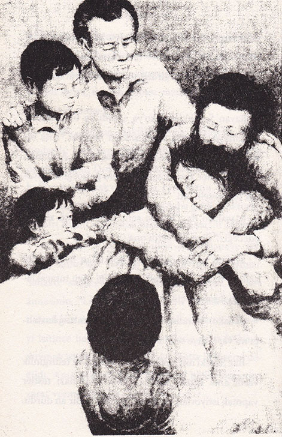

Dualar ve uğurlar, görevlerini haftalarca yerine getirdiler. Sadako daha uzun mesafe ve daha hızlı koştukça, kendisini güçlü ve sağlıklı hissediyordu.
Ne var ki, bütün bunlar şubat ayının soğuk bir gününde sona erdi. Okulun avlusunda koşarken birden her şey etrafında dönmeye başladı ve Sadako yere düştü. Sadako’nun düştüğünü gören öğretmenlerden biri, yardım etmek için onun yanına koştu.
“Ben... ben sanırım yoruldum,” dedi Sadako, bitkin bir sesle. Ayağa kalkmaya çalıştığında sendeledi ve tekrar düştü. Öğretmen, Mitsue’yi durumu Bay Sasaki’ye anlatması için eve gönderdi.
Bay Sasaki, berber dükkânını kapattı ve Sadako’yu hemen Kızılhaç Hastanesine götürdü. Hastaneye girince, Sadako korkuya kapıldı çünkü bu hastanenin bir kısmı, atom bombası yüzünden hastalanmış kişilere ayrılmıştı.
Sadako, birkaç dakika sonra muayene odasındaydı. Hemşire göğüs röntgenini çekti ve kan örneğini aldı. Doktor Numata, Sadako’nun sırtına hafifçe dokunarak ona birkaç soru sordu. Sadako’yu muayene etmek için üç doktor daha geldi. Doktorların biri başını sallayarak Sadako’nun saçını okşadı.
Bu arada, Sadako’nun ailesi de hastaneye gelmişti; annesiyle babası doktorun odasındaydılar. Sadako, sadece mırıltılar duyabiliyordu. Bir ara annesinin, “Lösemi mi? Fakat bu olanaksız!” diye bağırdığını duydu. Sadako bu dehşet verici kelimeyi işitince hemen kulaklarını tıkadı; daha fazlasını duymak istemiyordu. Hastalığı elbette ki lösemi değildi. Ama neden? Atom bombası hiçbir organına zarar vermemişti ki!
Hemşire Yasunaga, Sadako’yu hastanedeki odalardan birine götürdü ve ona pamuklu bir kimono verdi. Ailesi odaya girdiğinde Sadako, yatağına giriyordu.
Bayan Sasaki, Sadako’ya sarıldı ve üzüntüsünü gizlemeye çalışarak yapmacık bir neşeyle, “Kısa bir süre için burada kalman gerekiyor,” dedi. Ardından “ama ben her akşam seni ziyarete geleceğim,” diyerek onu teselli etti.
Masahiro da, “Biz de seni okul dönüşü ziyaret edeceğiz,” diye söz verdi ona.
Mitsue ve Eiji de gözleri korkudan fal taşı gibi açılmış halde -kardeşlerinin verdiği sözü tutacaklarını göstermek için- başlarını eğdiler.
Sadako, “Bende gerçekten atom bombası hastalığı mı var?” diye sordu babasına.
Bay Sasaki’nin bakışlarında üzüntü ve tedirginlik vardı ama kızına sadece, “Doktorlar bazı testler yapmak istiyorlar, hepsi bu,” diyebildi. Bir an durdu. Sonra, “Seni burada birkaç hafta tutabilirler,” diye ekledi.

Birkaç hafta, öyle mi?
Bu süre, Sadako’ya yıllar gibi geldi. Ayrıca ortaokula geçerken diploma töreninde de bulunamayacaktı. Daha da kötüsü, atletizm takımına da katılamayacaktı. Sadako, bunları düşündükçe, ağlamamak için yutkunup durdu.
Bayan Sasaki kızıyla yakından ilgileniyor, ufak ayrıntılar üzerinde bile titizlikle duruyordu. Yastıkları kabartıyor, çarşafı düzeltiyordu.
Bay Sasaki boğazını temizleyerek, “Kızım... bizden istediğin bir şey var mı?” diye sordu.
Sadako başını salladı. İstediği tek şey eve gitmekti. Ama ne zaman? Bu düşünceyle korkudan ürperdi, midesine kramp girdi. Bu hastaneye gelenlerin bir daha eve dönemediklerini duymuştu.
Daha sonra Hemşire Yasunaga, Sadako’nun dinlenebilmesi için ziyaretçileri gönderdi. Sadako odada yalnız kalınca başını yastığa gömdü ve uzun uzun ağladı. Kendisini hiç bu kadar yalnız, mutsuz ve çaresiz hissetmemişti.